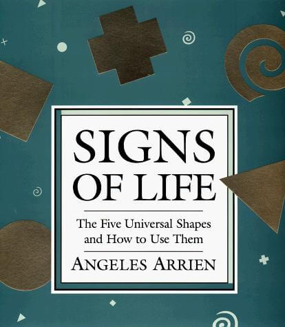

Voulez-vous savoir sur quoi vous focaliser aujourd’hui afin de faire un grand pas en avant et de libérer votre potentiel et créativité ? Ce petit test rapide vous apportera la réponse en 5 minutes !
Ce test a été crée par Angeles Arrien, et vient de son livre « Signs of Life ». Angeles est anthropologue et a étudié pendant une trentaine d’années les symboles et leur signification dans diverses cultures. Ses études ont montré que 5 symboles revenaient régulièrement dans n’importe quelle culture : le carré, le rond, la spirale, le triangle et le signe plus. Elle a aussi montré que la signification de chaque symbole était quasiment universelle, avec plus de 85% d’uniformité dans toutes les cultures.
Elle a ainsi crée ce petit test qui nous permet, d’une part de déterminer où nous pensons être dans notre vie, mais d’autre part et surtout, de déterminer où nous sommes vraiment et ce sur quoi nous devrions nous focaliser afin de mieux avancer et libérer notre potentiel et créativité. Aucune traduction française de cette ouvrage n’a été publiée jusque là. Mais voici une traduction du test et des résultats.
Faire le test